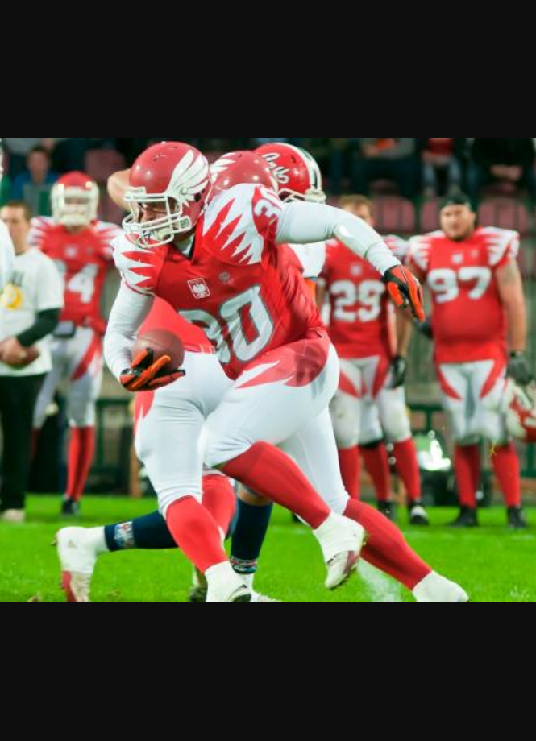
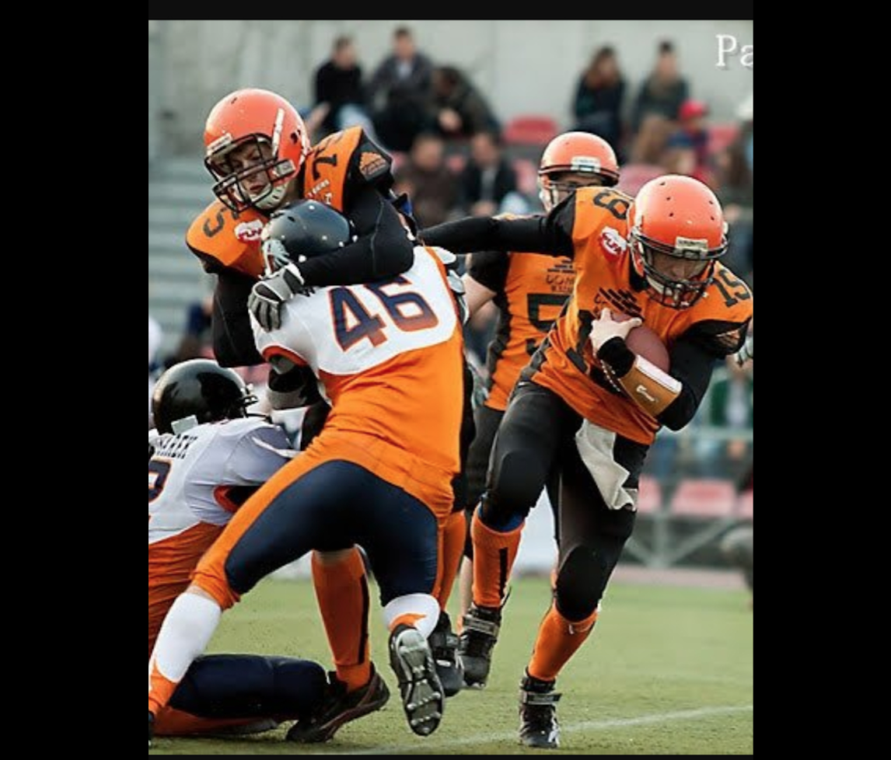
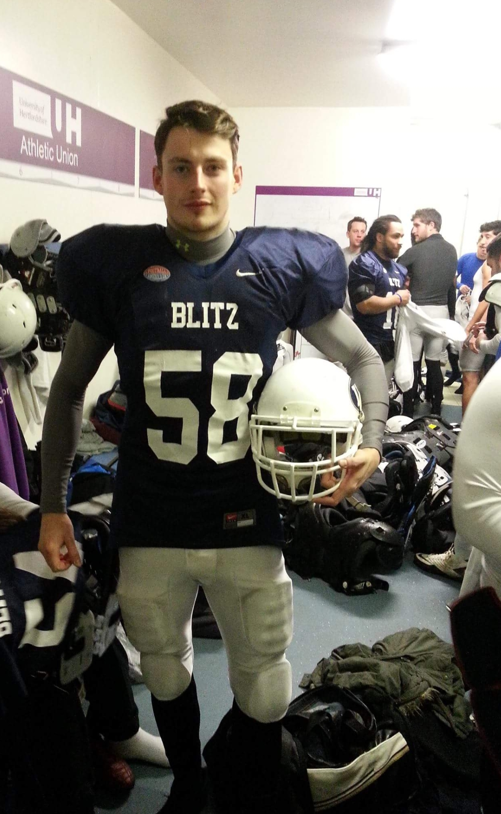
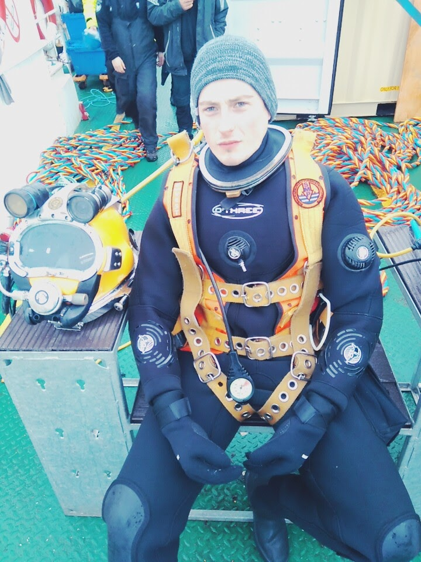
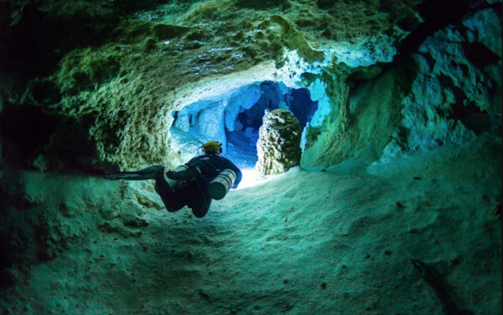
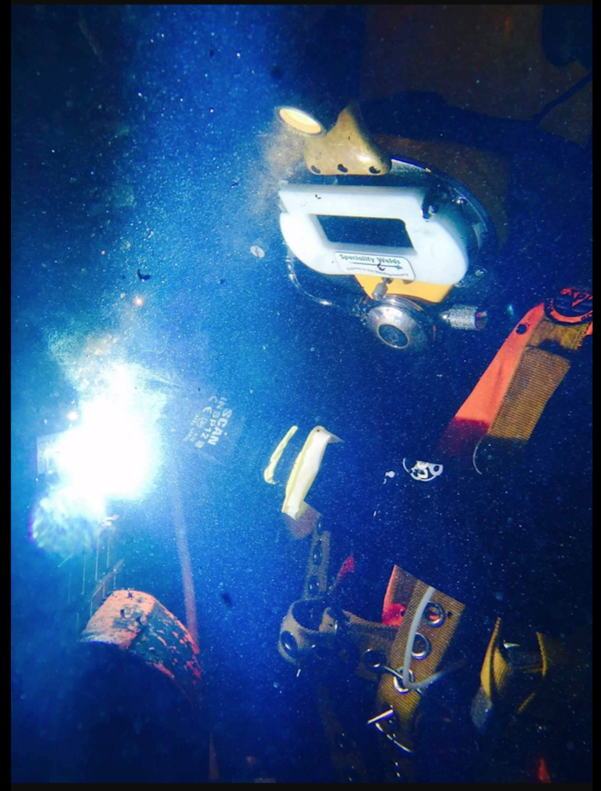
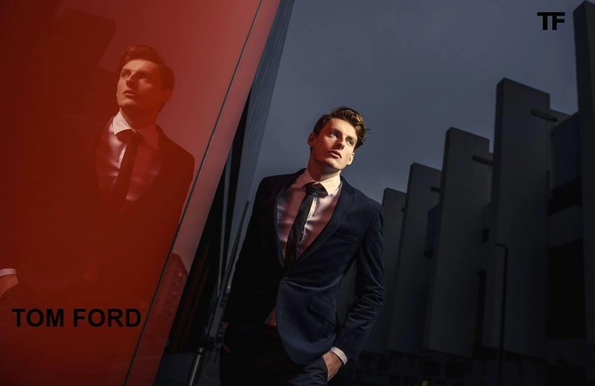
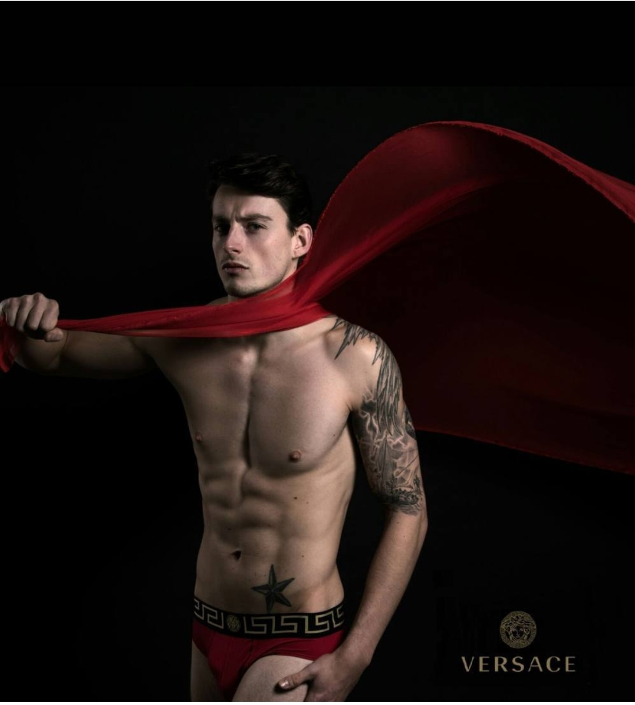
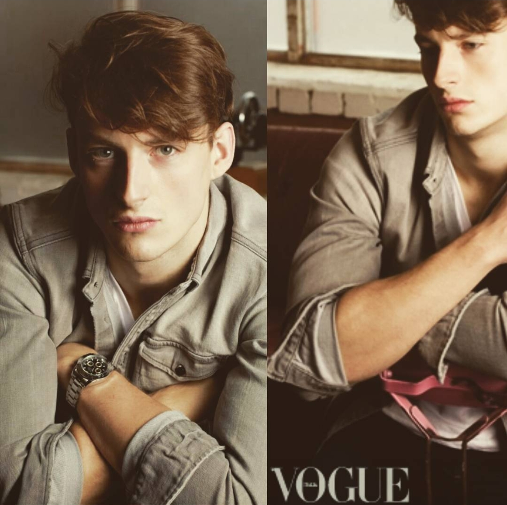

<!DOCTYPE html>
<html lang="en">
<head>
    <meta charset="UTF-8">
    <link rel="stylesheet" type="text/css" href="main.css">
    <title>Document</title>
<body class="body">
</head>
</html>
<p>
   <h3 class="center">ABUT ME</h3>

<p> That is very good question hehe
    Nothing ever  was given to me ( That's the best how I can start, have more scenes later ).<br> 
    My story starts 33 years ago , in poland. I never could find my way, lots of trouble <br>
    as you possibly could imagine. I did have family but it never feel like I have one….so most of the time<br>
    I spend on the street with friends, thats bring lots of problems even if you do not want them <br>
    they will come for you. Never was good at school but someHow I managed to accomplish <br>
    2 different directions at universities, and that's where my life really began.<br>
    I always wanted to play in a team so I popped in  to american football trial session<br>
    for the EU league and did not even think that this might take me to different places around the world,<br> 
    open for me so  many doors and allowed me to meet so many fantastic people.<br></p>
    &nbsp; &nbsp; &nbsp; &nbsp; &nbsp; &nbsp; &nbsp; &nbsp; &nbsp;

&nbsp; &nbsp; &nbsp; &nbsp; &nbsp; &nbsp; &nbsp; &nbsp; &nbsp;

&nbsp; &nbsp; &nbsp; &nbsp; &nbsp; &nbsp; &nbsp; &nbsp; &nbsp;


    Shortly after that trial I received a proposition to play for one of the teams a few months after I won,<br> 
    best rookie of the year  in the league,  suddenly I was invited to play international  to play for Country I was born….<br> 
    After another season, boom! Scholarship  coming right from the USA yes from ...USA <br>
    I manage to get to D1 and play with The best, I was so close to play for NFL and the one day,<br>
    I still remember like that was yesterday. I play game very important game well all of them was important <br>
    because I always plaid  as harder I can like is my last game and that was my last game never forget… <br>
    is hard to forget 23 hat, 24 hat, 24 red that, that calling Is a treiger for the snapper to release<br>
    ball and passing will go to the right receiver (me) I run as fustre I can to 50 yards, I cut that torpedo and<br>
    I see back liner I jump over his head when  he try to hit me, quick hills rotation hit doge another one<br>  
    in front of me one safety I hit him with my helmet in his helmet from the side that's flip him like a pancake <br>
    and the from my left side hit on my hip but I still run with this guy driving me to the side by my hip, almost <br>
    touchdown and then illegal block coming another person hit me from the other side on the level of my shoulder <br> 
    and that damage my spine. No big deal I said, but unfortunately I could not carry on  my professional athletic <br>
    cariere. After that I returned to England. I did not know what I wanted to do. I was fascinated by scuba diving <br>
    I Decide to do it carrier working underwater I went to royal navy diving academy<br>
 
    
   
    
   
    
    <p>
    in scotland Denoon finish with <br>
    7 different specjalstion like UXO, HydroTIDING,BURNING,WELDING,INSPECTION,CONSTRUCTION,DMT DIVER (and yes I manage <br>
    to work on extreme depth of 250m been in the places  no one was before, even looking for old artefact for british museum)<br>
    In a mentaime, one person stopped me on the street, asking If I would like to be a model?<br>
    I never want to do it but my friend that was with me during that moment tole me to go for it if<br> 
    I do not like that just drop it. So I decided I will pop in, to have a look. I got invited to<br> 
    london fashion week and after that I just keep getting proposition, meet famous people from around the world<br>
    that I will never could  thinking I will be able to meet, more than that spend time with this people.<br>
    I work for Vogue, Versace, Tom Ford, etc I have taken part in fashion awards and many, many more.<br>
    And here I am writing this what you reading now</p>
    &nbsp; &nbsp; &nbsp; &nbsp; &nbsp; &nbsp; &nbsp;&nbsp; &nbsp; &nbsp; &nbsp; &nbsp;
    
   
    
    &nbsp; &nbsp; &nbsp; &nbsp; &nbsp; &nbsp; &nbsp; &nbsp; &nbsp; &nbsp; &nbsp; &nbsp; 
    &nbsp; &nbsp; &nbsp; &nbsp; &nbsp; &nbsp; &nbsp; &nbsp; &nbsp; &nbsp; &nbsp; &nbsp; 
    &nbsp; &nbsp; &nbsp; &nbsp; &nbsp; &nbsp; &nbsp; &nbsp; &nbsp; &nbsp; &nbsp; &nbsp; 
    &nbsp; &nbsp; &nbsp; &nbsp; &nbsp; 
    
    

    <video width="600" controls>
    <source src="modeling.mp4" type="video/mp4"></video>Basically I made my videos

</P>
</body>